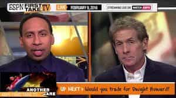
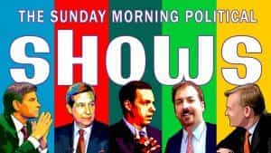

< < < Back
3 Types Of Shows That Are Like “The View” For Men – Return Of Kings
“The View” is (rightfully so) the butt end of all jokes, references, sleights, and insults intelligent people use to shame the inferior women who watch it. It is vain, vapid, narcissistic, unintelligent, masturbatory, full of itself, and other accurate pejoratives, but above all else it is a waste of time. Women who watch it are quite literally pissing away their lives. About the only thing worse that could be said about it is that it misleads women into having an inaccurate view of the world that not only ruins what dwindling time they have on the planet, but lessens the value of the lives of those around them. It is, quite simply, poison.
But before we men get on our high horses and mock and ridicule those who watch “The View,” we might want to take inventory of our own viewing habits, for most of us are guilty of wasting our time on equally worthless, vapid, and pointless shows.
1. Sports Coverage Shows

It is no secret I enjoy playing sports, but loathe those who merely watch them. This isn’t to say you can’t take in a game or enjoy a Sunday afternoon football party, but if you’re one of those losers who’s wearing another man’s jersey while you hork down wings and light beers at Buffalo Wild Wings, we need to talk. If your emotional and psychological health depends on whether “your” team wins or loses, we need to schedule a beating. And if you are one of those people who watch the draft because your “fantasy football” team depends on it, even beatings won’t help you.
But even if your entire life’s happiness is dependent upon “March Madness,” you still haven’t lowered yourself to the level of watching “The View”…that is unless you watch…
…sports coverage shows.
The game I can understand. Lacking the mental strength to ignore the temptations of tribalism I get. But if you have nothing better to do than watch the “pre-post-pre-pre game show,” ESPN, or “Sports Center” you are now watching one of the three male versions of “The View.” Sports Center, ESPN, even the local sports-talk radio program are talking about events that happened in the past and literally have nothing to do with you. You aren’t part of their team. You aren’t part of their club. You are merely a sucker who is paying extra cable costs to imagine you are.
But what’s worse is the pure wasting of time and resources that is spent on the analysis and forecasting of professional sports. Drawing lines and highlighting players with circles, dissecting on the “best plays of the week,” and analyzing the trade of “Pip Johnson” for “Flabby Jones” as if there was a science, let alone a point to it. What makes it doubly rich is the people this “analysis” comes from—has-been’s, never-were’s, and the epitome of vicariously-living hacks—sports journalists. Their opinions, observations, and editorials are just as valuable as that of a women’s studies professor’s opinion on politics because there is no study in the first place.
Professional sports, and certainly the shows surrounding it, have never solved, and never will solve any problem in the real world. So please, stop wasting your time, and go throw a ball with your son.
2. Political Analysis Shows

Somewhat closely related to sports is politics.
Like sports, politics is something most people wield little-to-no control over. It is purely the domain of trust-fund baby, public service athletes called “politicians.” However, just like sports themselves, the analysis of politics is not complicated, nuanced, or difficult. All of politics can be summed up quite succinctly as a battle between producers and parasites. Producers are hard working people who want freedom, excellence, low taxes, and to be left alone. While parasites are lazy people, deathly afraid of work, who want to live off of the producers and will come up with ANY reason and rationalization as to why they’re entitled to other people’s labor. See if that description does not explain nearly everything you’ve seen in politics since you’ve started paying attention to it.
Ergo, because politics is not complicated, like sports it attracts very mediocre minds who believe it’s some kind of “study” or discipline that requires their “unique” insight to explain it to you commoner plebs. This is perfectly evidenced by the three main types of people who pursue politics as a career, or obsess over it as a hobby:
- Journalists
- Political Science majors
- Activists/SJW’s
And like your pre-pre-post-post-game analysis shows, you see the same low-brow, “View”-level intelligence from these self-anointed political experts.
“Meet the Press,” “60 Minutes,” “The Rachel Maddow Show,” “This Week,” and the veritable media shitshow that passed for “news coverage” this last presidential election. Nearly every one of these “professionals” have been regurgitating the same shit for the past 50 years, yet NEVER managing to actually advance politics or democracy towards an improved state or a better system that would serve the people. Furthermore, they’re incapable of it because that would require higher-than average intelligence (not to mention morality), so watching these talking heads in the expectations of hearing a revolutionary thought or break-through in civics and governance is like waiting to hear Colin Cowherd say something that would cure children’s cancer.
Of course, paying attention to politics is very important. We all have a huge, legitimate, and vested interest in who is leading our government and what his or herpolicies are. So at least in this regard, it’s better than sports because you are invested in the outcome (and with your vote, you actually have a say). But you cross the line when politics becomes your god, agency, and purpose in life. That, like ESPN, you no longer care about the game, but the analysis before and afterwards because you have nothing else to do. It’s just instead of ESPN, you’re tuning into CNN or Foxnews because you’re a “news” or “political junkie” and you need your fix.
Once again, like “The View,” we are very quick to mock and ridicule these type of people—the feminists, SJW’s, protestors, OWS, BLM, etc. These people’s lives are so worthless, they have nothing else to do but subscribe to these false political religions and derive value from them. But before we judge too quickly, look your own political bias and behavior. How much time do you spend reading political articles? How many articles about women screwing over their ex’s in divorce court can you consume? How many articles about refugees and the collapse of Western civilization do you need?
This is perfectly exemplified by the zealots, fanatics, and purists in the MGTOW community who obsess over the politics of sex rather than learn from it and move on. In other words, you may very well be correct politically, but if it becomes your life you are once again wasting your time on the second male version of “The View.”
Research the candidates. Research the issues. Learn a little bit about economics. Become an informed voter. Vote. And then get back to your regular life with your wife, children, friends and loved ones. Fuck George Stephanopoulos, fuck Rachel Maddow, fuck 60 Minutes, and fuck Foxnews Politics. You have more important things to do in life.
3. Financial Markets Shows
The third and final “View Variant” for men are financial market analysis shows. CNBC, Mad Money, Squawk Box, and “Power Lunch,” there’s no end to the amount of propaganda shows that remind you by the minute how important it is you invest your money in Wall Street and the stock market. Why you just won’t be able to retire unless you squirrel away 30% of your paycheck into a 401k! But thankfully these kind, thoughtful, caring talking heads anchors are smart enough to tell you how.
BS.
Here’s the dirty little secret about Wall Street, investing, and all these “financial gurus.”
They’re all unnecessary and obsolete.
Yep, that’s right. If all these “experts” died and went away NOTHING bad would happen because the truth is about 85% of them can’t even beat the S&P 500 index. That means you, WITHOUT ANY TRAINING IN FINANCE OR INVESTING, can beat 85% of the “professionals” out there in New York by merely investing in indexed funds. You combine that simple bit of advice with the following five bits of advice:
Don’t go to college until you know what you want to do.
Don’t major in stupid shit.
Spend less than you make.
Don’t stick your dick in crazy.
Don’t have kids you can’t afford.
…and it’s damn near impossible for you to fuck up your finances.
So if it really is that simple to retire successfully, why are there multiple 24-hour-a-day channels dedicated to the financial markets? Well, in part it’s a genuinely needed service for finance professionals to keep tabs on the market. In part it’s to drive demand up for finance firms’ largely unnecessary investment services. But where it takes on role of “The View” is where it serves as, once again, a substitute for something tangible and meaningful in one’s life.
I don’t know how many people I knew in the late 90’s who all fashioned themselves professional stock traders simply because they belonged to one of the millions of “investment clubs” that were the fad back then. I don’t know how many “housing experts” I knew back in the mid 00’s who thought they were on par with Donald Trump when it came to being a real estate mogul. And today it seems the latest fad is for young men to make their millions trading currencies. They all thought they were capable of this because they were all watching CNBC during the daytime.
This isn’t to say that learning about financial markets, investing, retirement planning, and economics is a bad thing. Nor am I slamming on CNBC (I think it’s a great channel with some great introductory EDUCATIONAL material). But when people started making it their new-found profession, substituting dreams of becoming a “day trader” vs. their current career as a plumber, these financial news shows became larger than they were.
Instead of an everyday-man’s way to keep tabs on the world’s financial markets and economies, it became the third male version of “The View,” wasting people’s time (and sometimes life savings) on a get-rich-quick hobby that just was not rigged for them. And just like women wasted their youth and looks on feminism, Oprah, and The View, I’ve seen many men waste all their money on flipping houses, Dotcom’s, and currency speculation.
There is no substitute for agency
The larger point is, to us outside observers, things like “The View,” “Oprah,” day time talk shows, Harlequin romance novels, and grocery store aisle magazines are clearly wastes of time that can turn damaging should women actually start to believe that poppycock. But without thinking about it ourselves, men can fall prey to equally, cleverly-marketed forms of media, running the same risks women do who watch “The View.”
What one needs to do is constantly be on guard to ensure that what endeavors and interests we do pursue in life provide genuine agency, purpose, and reason, and are not substitutes that lead us into self-pity, inaction, defeatism, entitlement, sloth, poor decisions, poverty, or just outright stupidity like the aforementioned three do. Just like a woman’s life is too short to be blaming everything on the opposite sex, so too is your life too short to be wearing another man’s jersey. Ensure you are at MINIMUM better than the average “The View” listener and demand agency from the media you consume.
Read More: 12 Reasons Why Liberals And Progressives Will Always Be Losers